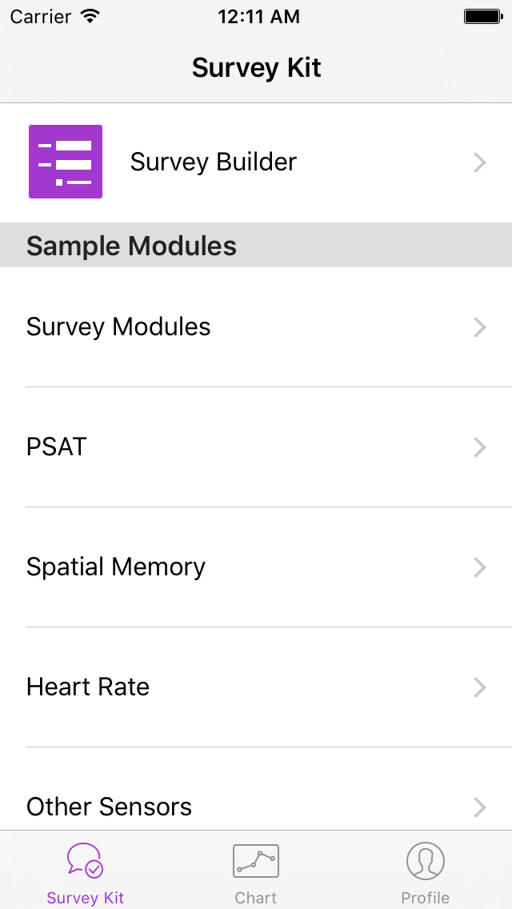

Research
At the beginning of my sophomore year in College I began to get involved in research. I expected to be well behind my peers, however, I quickly found my past mobile development experience gave me a huge advantage over many of my fellow researchers. My skills impressed my peers and my professors, and I quickly found myself leading several important projects. During my time in the lab I have led teams of people from at least 3 different countries, who can speak at least 3 different languages, who vary in age, and who’s level of education vary from undergraduate to graduate. I have worked on iOS apps, hybrid apps, and web sites. I have worked with organizations like the Missouri Department of Conservation and the University of Missouri Psychology Department. I have worked with people with impressive technical backgrounds and no technical backgrounds. The projects I have worked on utilize front and back end technologies, several different APIs, and even machine learning.
Hybrid apps for the Missouri Department of Conservation
One of the projects I worked on initially was a hybrid app for the Missouri Department of Conservation (MDC). Hybrid apps are apps which are built once and made available on both iOS and Android. The app was the first hybrid app which was developed in our lab, so I decided which technologies we would use to develop the app. We used Phonegap because it was powerful and easy to use. I worked with 2 graduate students on the project, and we finished the app in a few months. The app enabled bow hunters to record the location of animals in the Missouri wilderness which enabled MDC to track animals. I am currently developing a second hybrid app for MDC. The new app tracks fish populations, and also allows for the collection of fish picture data to train a neural network to detect a fish.
Shooting Ranges Website for the Missouri Department of Conservation
Shortly after I developed the bow hunting hybrid app, I developed a website which displayed all of MDC’s shooting ranges on a map. The app needed to be developed in a single month’s time. I used the Google Maps API to develop the entire map part of the website while a graduate student handled the back end and the front end surrounding the map. We developed the website in time, and we were enthusiastically thanked by MDC and informed the website it was replacing took 2 years to develop. View the site here.
MCART for the University of Missouri Psychology department
MCART, or Mizzou Configurable Addiction ResearchKit Tool, is an iOS drug addiction research tool built using Swift. MCART utilizes iPhone and Apple Watch sensors to gather data which may be important to drug addiction researchers. MCART also enable drug addiction researchers to build their own surveys from predefined survey modules. MCART utilizes ResearchKit for its front-end and JSON for its back-end. I led a team of graduates and undergraduates to develop the app with University of Missouri Psychology Department.
Mood ToolKit for the University of Missouri Psychology department
Mood ToolKit is a project which dramatically improved my design skills while honing my iOS development skills. Mood ToolKit was entered into a competition called the Mood Challenge. Mood ToolKit was selected as 1 of 5 semifinalists. Because Mood ToolKit was a semifinalist, two members of my team got to go to a boot camp at Apple’s head quarters in Cupertino, CA. I was selected to go because I led the development team for Mood ToolKit, while the psychology professor who we developed the app for also went. While at the boot camp I met several Apple engineers and designers. Apple had designers and engineers help my team and our competitors improve the design of our apps. Mood ToolKit is very similar to MCART, but Mood ToolKit focuses on Mood rather than drug addiction. In addition to Mood ToolKit’s configurable mood survey capabilities, it also uses deep learning to analyze survey data and draw correlations between mood, physiology, and context. I learned much about design from Apple, and I significantly improved the design of Mood ToolKit.
While I was improving Mood ToolKit’s design I honed my iOS development skills. I had never spent so much time on the design of an app without considering the difficulty of engineering the design. As a result Mood ToolKit’s design was difficult to engineer, however it was very well designed. Engineering this difficult design honed my development skills.
I learned a lot from the boot camp. Apple’s designers taught me how valuable the user is to considering design, while Apple’s engineers taught me how to build many things using ResearchKit and iOS I never believed I could build. The boot camp was very informative, and I was honored to be the only competitor there without a major title like dean, professor, doctor, or CEO.

TigerAware
TigerAware is a fully configurable data collection app which was built on top of Mood Toolkit. Unlike Mood Toolkit, TigerAware is capable of creating and deploying any kind of survey in addition to utilizing a smart phone’s sensors like the camera or accelerometer. I lead development and direct business strategies for TigerAware. I designed the backend, the iOS frontend, and parts of the web front end. TigerAware was marketed toward the University of Missouri as an app capable of gaining real time awareness of campus issues after the university had some campus race issues. TigerAware won the Interdisciplinary Innovations Fund Award from the university for $25k. My work specifically on TigerAware also won an award from the School of Fine Arts for artistic expression and applied design for its UI.